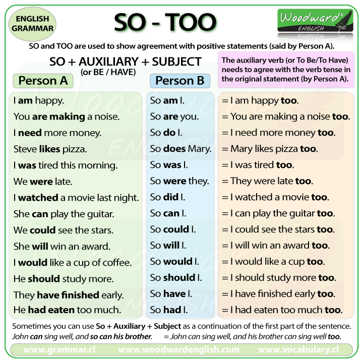
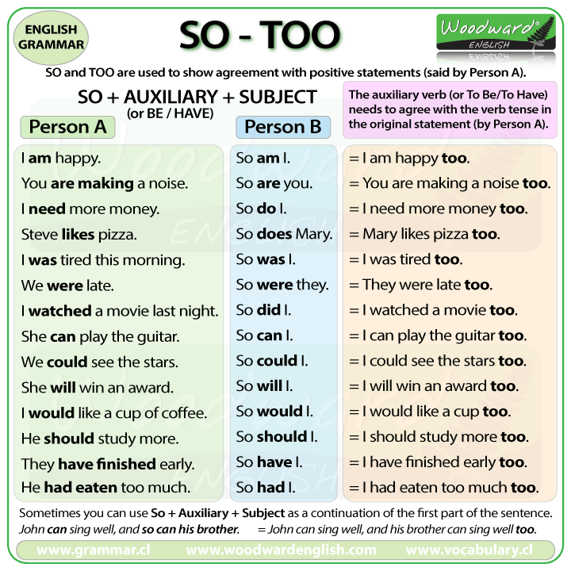
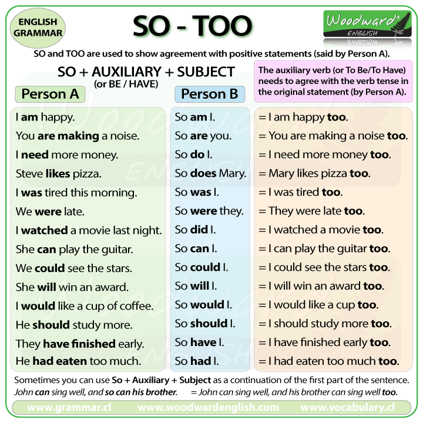

Introdueix la paraula correcta a l’espai en blanc, fes clic a Comprova —o prem la tecla Retorn— i escolta la frase completa.

Also s'utilitza normalment abans del verb principal o després del verb to be. És més comú en llenguatge formal.
Too s'utilitza al final de la frase. És més comú en llenguatge informal.
So do I (o les seves variants) s'utilitza per expressar acord amb una afirmació anterior. Cal adaptar l'auxiliar segons el verb i temps de la frase original.